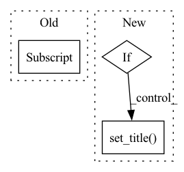

Pattern ID :23088
Before Change
vcenter=0.0,
vmax=max_value
)
im = axes[0] .imshow(initial_wights, cmap="RdBu_r", norm=divnorm)
else:
im = axes[0].imshow(initial_wights, cmap="RdBu_r")
else:After Change
borderpad=0,
)
if kwargs.get("compute_dale", "dale_law_kwargs" in kwargs):
dale_law_kwargs = kwargs.get("dale_law_kwargs", {})
dale_law_kwargs.setdefault("seed", 0)
initial_dale = nt.to_numpy(nt.DaleLaw([nt.to_tensor(initial_wights)], **dale_law_kwargs)())
final_dale = nt.to_numpy(nt.DaleLaw([nt.to_tensor(final_weights)], **dale_law_kwargs)())
axes_view[0].set_title(f"Initial Weights (Dale loss = {initial_dale:.3f})")
axes_view[1].set_title(f"Final Weights (Dale loss = {final_dale:.3f})")
else:
axes_view[0].set_title("Initial Weights")
axes_view[1].set_title( "Final Weights")
fig.colorbar(im, cax=cax)
fig.set_tight_layout(False)
if filename is not None:In pattern: SUPERPATTERN
Frequency: 4
Non-data size: 3
Instances Fragment ID: 73058570
Project Name: neurotorch/neurotorch
Commit Name: 527ad1375f44f2097c3bd29624fe3b199686df98
Time: 2022-09-28
Author: 50332514+JeremieGince@users.noreply.github.com
File Name: tutorials/figure_generation_util.py
M Class Name: AnonimousClass
N Class Name: AnonimousClass
M Method Name: visualize_init_final_weights(6)
N Method Name: visualize_init_final_weights(4)
M Parent Class:
N Parent Class:
M File Name: tutorials/figure_generation_util.py
N File Name: tutorials/figure_generation_util.py
M Start Line: 474
M End Line: 513
N Start Line: 468
N End Line: 527
Before Change
axes[0].set_title("Occlusion")
// matshow plots x and y swapped
mat = axes[0] .matshow(np.swapaxes(occ_dem, 0, 1), vmin=dem_vmin,
vmax=dem_vmax, cmap=dem_cmap)
fig.colorbar(mat, ax=axes.ravel().tolist(), fraction=0.045)
After Change
mat = axes[1, 0].matshow(np.swapaxes(occ_data_um, 0, 1), vmin=0, vmax=4, cmap=um_cmap)
axes[1, 0].grid(False)
if gt_data_um is not None:
axes[1, 1].set_title( "Ground-truth data uncertainty")
// matshow plots x and y swapped
mat = axes[1, 1].matshow(np.swapaxes(occ_data_um, 0, 1), vmin=0, vmax=4, cmap=um_cmap)
fig.colorbar(mat, ax=axes[1, :].ravel().tolist(), fraction=0.045)
axes[1, 1].grid(False) Fragment ID: 73058571
Project Name: mstoelzle/solving-occlusion
Commit Name: e8005fc22f2a50ab96f9b4ba2981bb0ed71a5dc8
Time: 2021-01-13
Author: maximilian@stoelzle.ch
File Name: src/visualization/sample_plotter.py
M Class Name: AnonimousClass
N Class Name: AnonimousClass
M Method Name: draw_dataset_samples(9)
N Method Name: draw_dataset_samples(7)
M Parent Class:
N Parent Class:
M File Name: src/visualization/sample_plotter.py
N File Name: src/visualization/sample_plotter.py
M Start Line: 26
M End Line: 35
N Start Line: 10
N End Line: 54
Before Change
ax2 = fig.add_subplot(1, 2, 2)
plt.title("Swapped Image", fontsize=15)
ax2.axis("off")
ax1.imshow(target[:,:,::-1] )
ax2.imshow(swap[:,:,::-1])
After Change
fig, axes = plt.subplots(1, len(images), figsize=figsize)
for idx, (ax, image) in enumerate(zip(axes, images)):
ax.imshow(image[:, :, ::-1])
if titles:
ax.set_title( titles[idx], fontsize=fontsize)
ax.axis("off")
Fragment ID: 73058572
Project Name: ai-forever/sber-swap
Commit Name: b946c2255e0c10c7ce25f42139badf8f71d4cfa1
Time: 2021-12-27
Author: dchesakov@nes.ru
File Name: utils/inference/image_processing.py
M Class Name: AnonimousClass
N Class Name: AnonimousClass
M Method Name: show_images(4)
N Method Name: show_images(2)
M Parent Class:
N Parent Class:
M File Name: utils/inference/image_processing.py
N File Name: utils/inference/image_processing.py
M Start Line: 76
M End Line: 85
N Start Line: 76
N End Line: 88